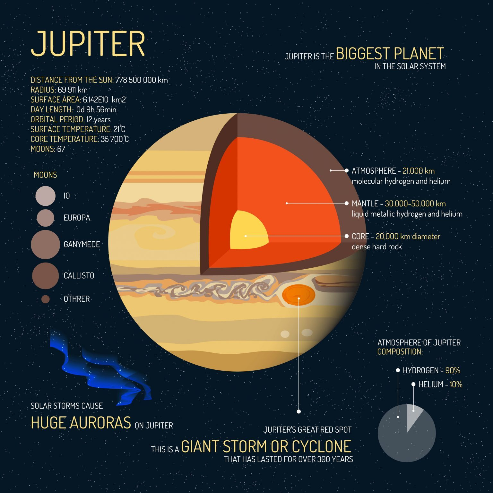

Jupiter Haqqında Məlumat
Jupiter is colossal in size. It’s so big that if you combined all the other planets, moons, and asteroids in our solar system in a ball, it still wouldn’t be half the size of Jupiter. At about 1000 times larger in volume compared to Earth, planet Jupiter is the largest planet in our solar system. In fact, if Jupiter was 50 times larger than it is now, it would be a star on its own. Surface Temperature: -145°C Distance to Sun: 778,500,000 km Moons: 79 Radius: 69,911 km Because of its tremendous size, it’s contending with the sun in a so-called gravity tug-of-war. It puts Mercury, Venus, Mars, Earth and an asteroid belt smack dab in the middle. Interestingly, Jupiter has a permanent cyclone that’s been there ever since we’ve observed it. It also has the biggest Aurora Borealis and 79 moons. Four of Jupiter’s large moons are particularly exciting because of their interesting geology. These moons are Ganymede, Callisto, Io, and Europa.
Şəkil

